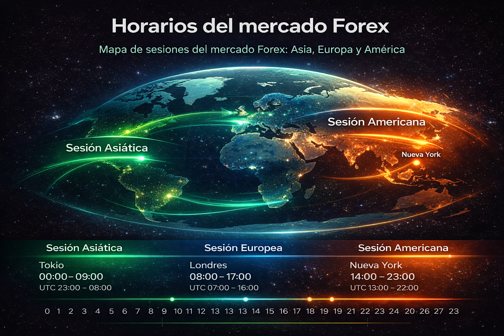

Objetivo: Que entiendas Forex con claridad (sin humo) y puedas decidir si este mercado encaja contigo. Aquí aprenderás qué es el mercado de divisas, cómo funcionan los pares y cuáles son los riesgos básicos antes de empezar. 👉 Si primero necesitas una visión general de los mercados financieros (acciones, índices, cripto, Materias Primas o también conocidos como Commodities Los commodities (materias primas) son bienes básicos, homogéneos y estandarizados, como el oro, petróleo, café o trigo, que se negocian en mercados financieros y son esenciales para producir otros bienes. Su precio varía por oferta, demanda, clima y geopolítica, y se invierten a través de futuros o ETFs para diversificar o cubrir riesgos. Se clasifican en energéticos, metales (duros) y productos agrícolas (blandos).
¿Qué es el mercado Forex?
Forex (Foreign Exchange) es el mercado de divisas: un espacio global donde se intercambian monedas. A diferencia de otros mercados, no tiene una única bolsa central; funciona de forma descentralizada, conectando bancos, instituciones y participantes en distintas regiones.

¿Cómo funciona el trading en Forex?
En Forex se opera con pares de divisas. Un par indica cuánto vale una moneda frente a otra. Por ejemplo, EUR/USD relaciona el euro (EUR) con el dólar estadounidense (USD).
- Divisa base: la primera del par (EUR en EUR/USD).
2) Comprar vs vender (idea simple)
Si “compras” EUR/USD, estás apostando a que el euro se fortalecerá frente al dólar. Si “vendes” EUR/USD, estás apostando a lo contrario.
¿Quiénes participan en Forex?
Estos son los participantes más comunes (a nivel general):
- Bancos centrales (política monetaria e intervención).
- Bancos comerciales y proveedores de liquidez.
- Fondos e instituciones.
- Traders minoristas (personas como tú, vía brokers).
Horarios del mercado Forex
Forex opera 24 horas, de lunes a viernes, siguiendo el ciclo de sesiones globales. Normalmente se habla de sesiones asiática, europea y americana.

Ventajas y riesgos del Forex para principiantes
Ventajas
- Alta liquidez: suele haber mucho volumen.
- Accesible: puedes empezar con cuentas pequeñas (ojo con el riesgo).
- Horarios flexibles: se adapta a distintas rutinas.
Riesgos
- Apalancamiento: amplifica ganancias y pérdidas.
- Volatilidad: puede moverse rápido, especialmente en noticias.
- Falta de plan: el error #1 del principiante es operar sin reglas.
¿Forex es el mejor mercado para empezar?
Depende de tu perfil. Forex es popular por su liquidez y horarios, pero no es “mejor” automáticamente. Hay personas que se adaptan mejor a acciones (movimientos más lentos) o a índices.
Si quieres comparar Forex con otros mercados sin confundirte, usa la guía pilar: Tipos de mercado financiero.
Primeros pasos recomendados (sin humo)
- Entiende pares y sesiones (ya lo tienes aquí).
- Define un riesgo fijo por operación (micro, constante).
- Practica en demo con un plan simple, no con “señales mágicas”.
- Cuando pases a real, baja el tamaño y prioriza consistencia.
Fuentes recomendadas (editoriales)
Para ampliar con información institucional (sin afiliados), puedes consultar:
Preguntas frecuentes sobre Forex
¿Qué es Forex en palabras simples?
Forex es el mercado donde se intercambian monedas. En trading, lo habitual es operar pares como EUR/USD.
¿Forex es lo mismo que trading?
No. Trading es operar mercados (acciones, índices, cripto, etc.). Forex es un mercado: el de divisas.
¿Por qué Forex es riesgoso para principiantes?
Por el apalancamiento y la volatilidad. Sin plan y control de riesgo, es fácil perder por errores básicos.
¿Cuándo abre el mercado Forex?
Opera 24 horas de lunes a viernes, siguiendo sesiones asiática, europea y americana.